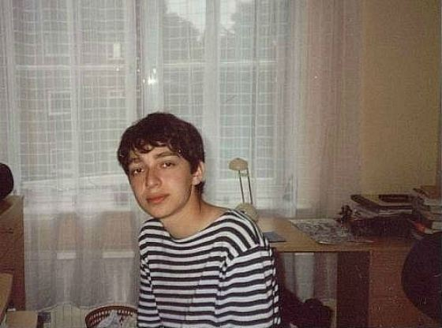

Келип чыгышы
Мирон 1985-жылы 31-январда Ленинграддагы төрөт үйлөрүнүн биринде төрөлгөн. Учурда атактуу рэпер жөнөкөй интеллектуалдык үй-бүлөдөн чыккан: Мирондун атасы физика профессору, апасы китепканачы болгон. Алгачкы 4 жылы Ленинграддагы №185 мектепте окуган, андан кийин атасына Германиядагы университеттердин бирине окууга сунуш кылынып, үй-бүлөсү менен Германиянын Руттеншайд шаарына көчүп кетишкен.
Жолдун башталышы
Немис тилин билбеген бөтөн чөйрөдө калган Мирон үчүн кыйын болду. Өзү окуган Мария Вехтлер атындагы абройлуу мектепте аны бай үй-бүлөлөрдөн чыккан классташтары басынтышкан. Бул оор мезгилге болгон мамилеси тууралуу кийинчерээк "Акыркы чакырык" ырында айткан. Бул рэп куткаруунун казыктары болуп калды, ал 13 жаштагы өспүрүмгө шылдыңдоону жана бейбаштыкты жеңүүгө жардам берген. Алгачкы чыгармаларын MC Mif каймана аты менен жараткан.
15 жашында, жигит кайрадан жашаган жерин өзгөрттү - ал Англиянын Слоф шаарына көчүп барган, ал ошол учурда Британиядагы баңги аткезчилик борборлорунун биринин атак-даңкына бекем орношкон. Мирондун эскерүүлөрүнө караганда, жергиликтүү балдардын арасында «чавлар», баңгилер жана четте калгандар көп болгон, бирок жаш жигиттин жергиликтүү мектеп тууралуу жагымдуу гана эскерүүлөрү болгон.
Ал жерде тарыхтан сабак берген мугалим жигиттин дараметин байкап, Оксфордго тапшырууну талап кылган. Ошол убакта өлкөнүн эң абройлуу университети Миронго мифтик жактан жетүүгө мүмкүн болбогон нерседей көрүнгөн; 2004-жылы башка абитуриенттердин арасында, өзүнүн жакшы эрудициясына жана татыктуу сертификатына карабастан, ал өзүнө «адепсиз дыйкан» көрүнгөн. Тилди кемчиликсиз билүү, немис акценти жана кандайдыр бир социалдык жана спорттук жетишкендиктердин жоктугу. Кыязы, тубаса өжөрлүгүнөн улам Мирон "Орто кылымдар адабияты" адистиги боюнча англис адабияты факультетин тандап, ошентсе да окууга кирди - курска аны "коомдун чокусунан" жергиликтүү англистер курчап алышкан.
2006-жылы ага биполярдык бузулуу диагнозу коюлуп, натыйжада Мирон университеттен чыгарылган. Бирок, ал айыгып, акыры Оксфордду бүтүргөн, бирок дипломдогу баалар эң төмөн болгон.
Окууну аяктагандан кийин, Мирон Лондондун четинде батирди ижарага алган - бул жашоо мезгили анын чыгармаларында да көп айтылат - жана жумушка орношууга аракет кылган, бирок туура байланыштарсыз бул Оксфорд үчүн да оңой эмес экени тез эле айкын болду. бүтүрүүчүлөр, өзгөчө мындай талап кылынбаган адистик жана төмөн баа менен. Жыйынтыгында ал курулушка жумушка орношту – бул чечим оңой болгон жок, бирок ага үй-бүлөсүн багуу жана чыгармачылык дымагын ишке ашыруу үчүн акча керек болчу. Кийинчерээк ал көптөгөн кесиптерди алмаштырган - ал тарбиячы, гид, конок болуп иштеген, кеңседе иштеген, жүк ташуучу унааларды түшүргөн, ал тургай бир нече убакытка чейин "адабий кара" болгон.
Дүйнөлүк атактуулук
2010-жылдын жай айларында Оксимирон Шок жана Ваня Ленин деген каймана ат менен белгилүү болгон дагы бир сүрөтчү менен бирге Мирон өзүнүн "Вагабунд" деген энбелгисин (которулат: "тентек", "тентип жүргөн") жараткан. Бул жумушчу альянстын алкагында ал өзүнүн биринчи альбомун чыгарды - "Түбөлүк еврей" орус тилдүү аудитория арасында жапайы популярдуулукка ээ болгон жана GQ журналынын "Жылдын ачылышы" номинациясына ээ болгон.
Шок менен бирге Оксимирон КМШ өлкөлөрүндө узак гастролдо болгон, бирок көп өтпөй рэпер Рома Жиган менен болгон кагылышуудан улам командада пикир келишпестик пайда болгон. Чыр-чатактан кийин Шок Германияга кетип, Оксимирон Москвада бекер жеке концертин берип, андан соң Лондонго кеткен.
Бир нече убакыт бою ал "жер астына кетти", бирок 2012-жылы күйөрмандарына өзүнүн биринчи "miXXXtape I" микстейбин тартуулады, бир жылдан кийин кийинкиси жарыкка чыкты - "miXXXtape II: Long Way Home". Бул мезгилде ал батыштын бир катар белгилүү сүрөтчүлөрү, анын ичинде канадалык рэпер Мадчилд жана немистердин Automatikk менен активдүү кызматташкан.
Оксимирондун экинчи жеке альбомунун чыгышы 2012-жылдан бери кечеңдеп, акыры 2015-жылдын ноябрь айында болгон. "Горгород" деп аталган диск Марк аттуу жазуучунун окуясын баяндаган толук концептуалдык чыгарма болгон, ошондуктан альбомдо 11 трек болгон композициялардын катаал тартибинде угууга сунушталган.
Саясий көз караштар
Оксимирон оппозицияда активдүү. 2019-жылдын июль-август айларында Оксимирон Москва шаардык Думасына шайлоого көз карандысыз талапкерлерди алып салуудан кийин бир катар нааразылык акцияларын ачык колдоп, ошондой эле камактагылардын баарын, анын ичинде Егор Жуковду да ачык колдогон.
2019-жылдын сентябрь айында рэпер Youtube сайтында "Текстке отур" онлайн спектаклин коюп, анын жүрүшүндө катышуучулар орус жана дүйнөлүк классикалык адабияттын авторлорунун чыгармаларынан үзүндүлөрдү окуп, андан соң айрым үзүндүлөр үчүн "термин" алышкан.
Oxxxymiron азыр
2021-жылдын ноябрында ал узак унчукпай тургандан кийин биринчи трегин чыгарды - он мүнөттүк мойнуна алган "Маркты ким өлтүрдү?", анда ал Жигандын сабалышы тууралуу окуяны дагы бир жолу эстеди.
1-декабрда Оксимирон жаңы 22 ырды, анын ичинде Монеточка, Айгел, Дельфин менен биргелешкен тректерди камтыган "Сулуулук жана көрксүздүк" аттуу жаңы альбомун тартуулады. Ал эми альбомдун мукабасын Борис Гребенщиков тарткан.
Оксимирондун узак тыныгуудан кийинки алгачкы спектаклдери 2022-жылдын башында Москва менен Санкт-Петербургда өтүшү керек болчу. Бирок Украинадагы куралдуу кагылыштан улам ал бардык концерттерин токтоткон:
Мени түшүнөрүңүзгө ишенем. Адамдар өлүп жатканда мен сени коноктой албайм. Мен азыр болуп жаткан табигый реакция - бул үмүтсүздүк жана толук дезориентация, үмүтсүздүк экенин билем. Бирок каршылык көрсөтсө, кайгылуу жүз менен болбойт деп эскертем.
Оксимирон Орусиядан кетип, бирок кийинчерээк Санкт-Петербургда өзүнүн жаңы ырына "Оида" үчүн клип тарттыруу үчүн кайтып келди, ал YouTube'дун дүйнөдөгү эң алдыңкы орундарында дээрлик 2 жума болду.